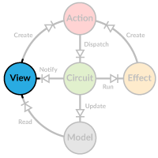

Views
 In Diode a view is a component that renders data from a model and reacts to model updates. It doesn't necessarily have to be a visual component (although it typically is), you could also make one to automatically store changed model data into local storage.
Building a View
A simple view needs only a reader to access model data, and a dispatcher to dispatch actions.
class CounterView(counter: ModelR[Int], dispatch: Dispatcher) {
def render = {
div(
h3("Counter"),
p("Value = ", b(counter.value)),
button(onclick := { () => dispatch(Increase(2)) }, "Increase"),
button(onclick := { () => dispatch(Decrease(1)) }, "Decrease"),
button(onclick := { () => dispatch(Reset) }, "Reset")
)
}
}
Using a ModelR instead of the actual value means we don't have to recreate the view every time the model is updated. We can create the view once in the
beginning and use it forever.
val counter = new CounterView(AppCircuit.zoom(_.counter), AppCircuit)
For our directory tree we need a more complex view that supports the recursive nature of the data.
class TreeView(root: ModelR[FileNode], parent: Seq[String], selection: Seq[String], dispatcher: Dispatcher) {
val id = root.value.id
val path = parent :+ id
val childSeq = build
// recursively build the tree view
def build = {
root.value.children.zipWithIndex.map { case (c, idx) =>
new TreeView(root.zoom(_.children(idx)), path, selection, dispatcher)
}
}
...
When creating a TreeView, it recursively creates a hierarchy of TreeView components in the build method. Each view gets its own reader and an updated path
to indicate its relative position in the tree.
...
def render: Frag = {
val isSelected = if(selection.nonEmpty && selection.last == id) "active" else ""
def renderName(name: String) =
a(href := "#", cls := isSelected, onclick := {() => dispatcher(Select(path))}, name)
root.value match {
case Directory(id, name, children) =>
li(cls := s"directory", renderName(name),
ul(childSeq.map(_.render))
)
case File(id, name) =>
li(cls := s"file", renderName(name))
}
}
}
In the render method the name of the node is rendered as a clickable element that dispatches a Select action when clicked. Currently selected node is
highlighted. If the node is a directory, its children are recursively rendered.
Listening to Changes
Views should update when the model changes. To get notified, subscribe to changes using Circuit.subscribe(listener). The call returns an unsubscribing
function you can later call to stop receiving notifications.
val root = dom.document.getElementById("root")
AppCircuit.subscribe(() => render(root))
def render(root: dom.Element) = { ... }
Listeners are called when anything in the model changes, even if it has no effect in the part of the model your view is interested in. Therefore it makes sense to check if a real change has happened, before doing expensive re-computations.
// rebuild the tree view if the model has changed
if(AppCircuit.zoom(_.tree.root).value ne currentModel) {
currentModel = AppCircuit.zoom(_.tree.root).value
treeView = new TreeView(AppCircuit.zoom(_.tree.root), Seq.empty, AppCircuit.zoom(_.tree.selected), AppCircuit)
}
If only selected is changed, we don't need to rebuild the tree as its structure has stayed the same. We do, however, need to re-render the tree to reflect
this change.
Listening to partial Changes
If your view is only interested in a small part of the model, you can register a listener to be called only when that part changes. To indicate what you are
interested in, supply a cursor function ((M) => AnyRef). This cursor function returns a part of the model for reference equality checking.
AppCircuit.subscribe(listener, _.tree.root)
Note that you cannot transform the values with, for example, Option.map because they must return the original reference within the model. If you do have an
Option in your path, use getOrNull to get the underlying value.
AppCircuit.subscribe(listener, _.optValue.map(_.data).getOrNull)